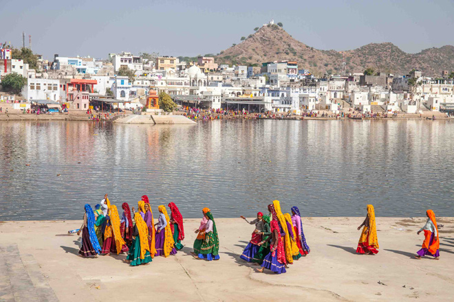
.
Pushkar is a Hindu pilgrimage town which curls around a holy lake, said to have appeared when Brahma dropped a lotus flower. Besides pilgrims, travellers have also discovered Pushkar's charms and small, whitewashed budget guesthouses almost outnumber the temples. The result is a muddle of religion, commerce and a lot of wasted westerners who appear to have been here since the 1960s having found the bhang cheap and plentiful.
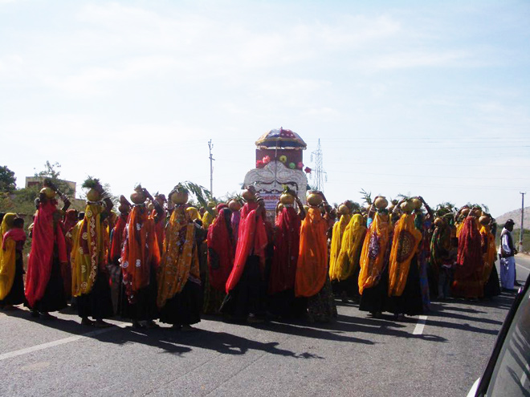
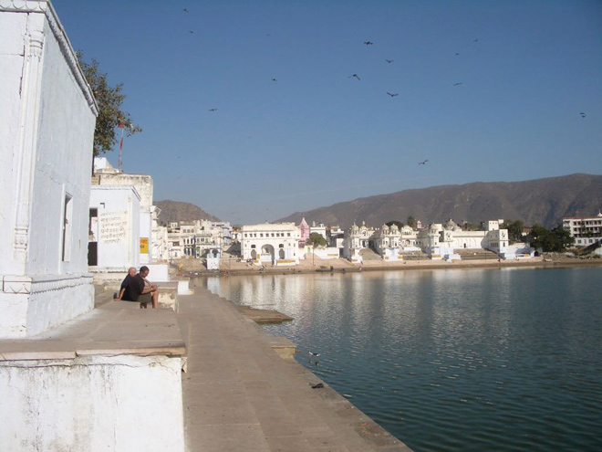
Few of the temples in Pushkar are ancient as they were mostly desecrated by Aurangzeb (son of Shah Jahan) and have subsequently been rebuilt. Most famous is the Brahma Temple which is marked by a red spire. Inside the floor and wall are engraved with dedications to the dead.
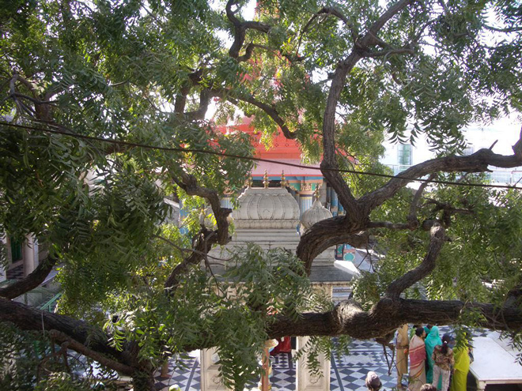
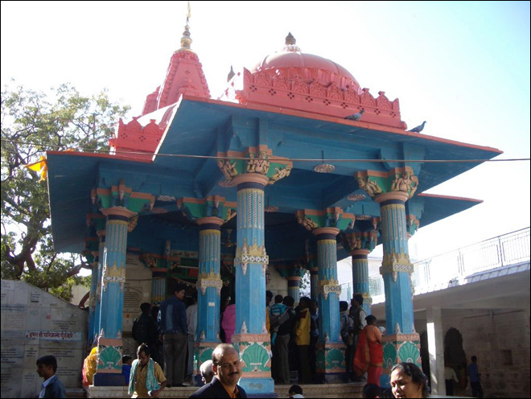
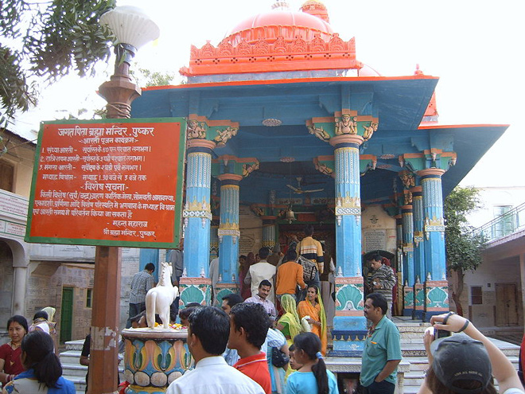
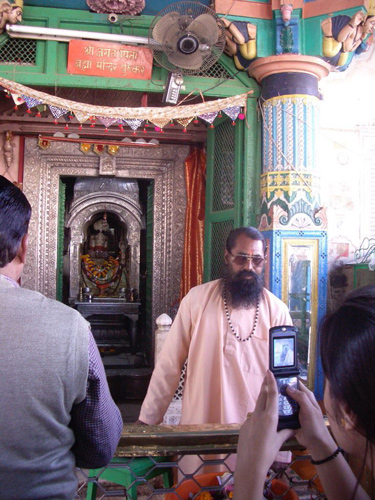
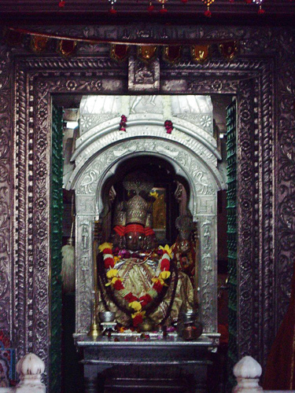
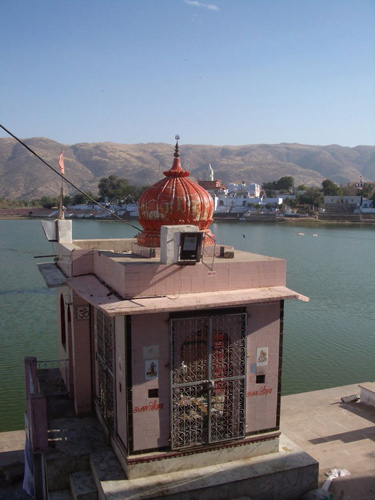
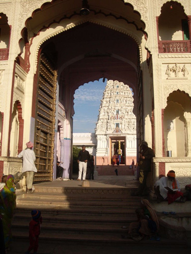
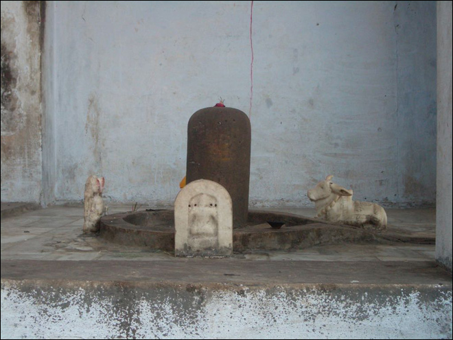
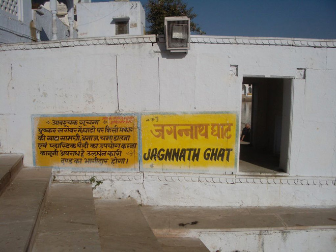
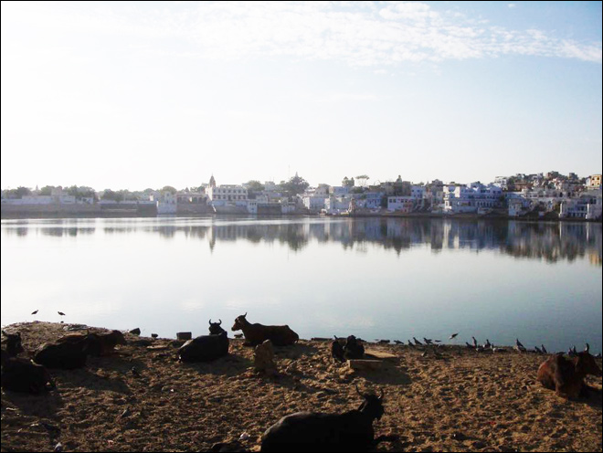
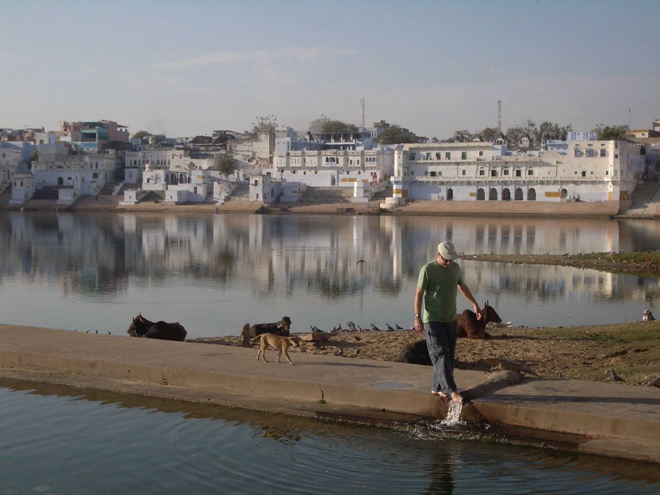
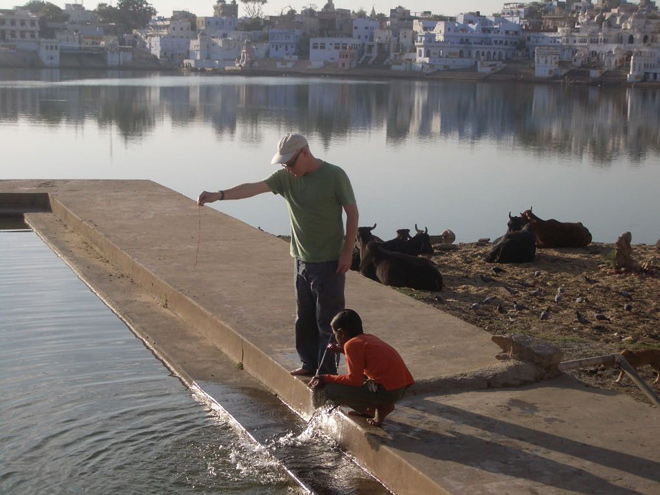
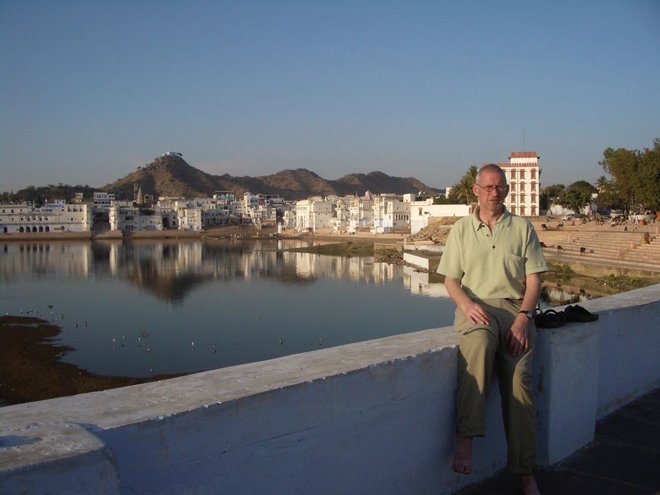
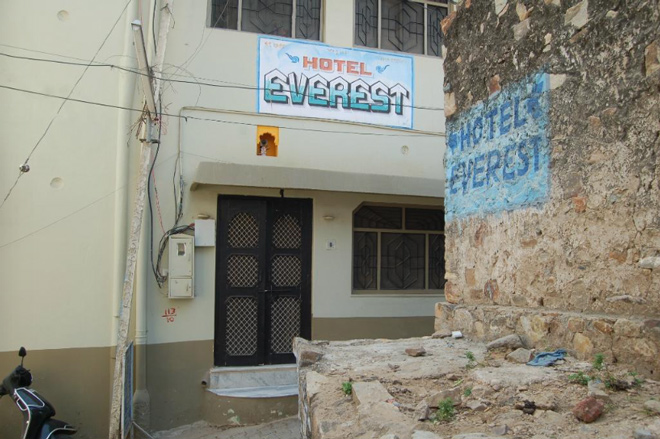
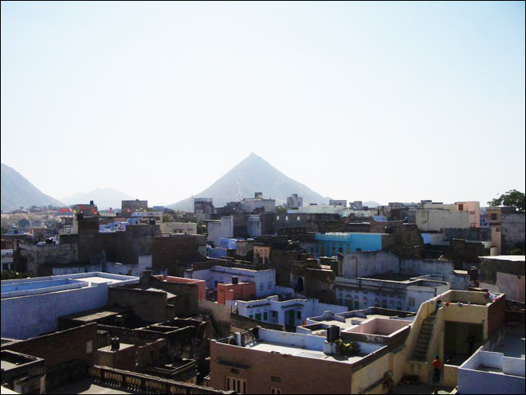
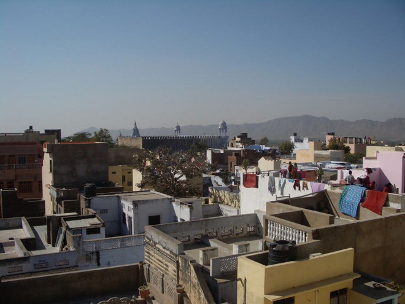
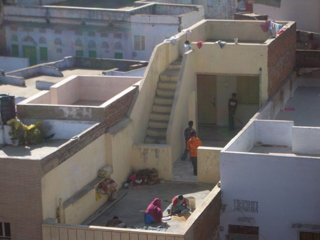
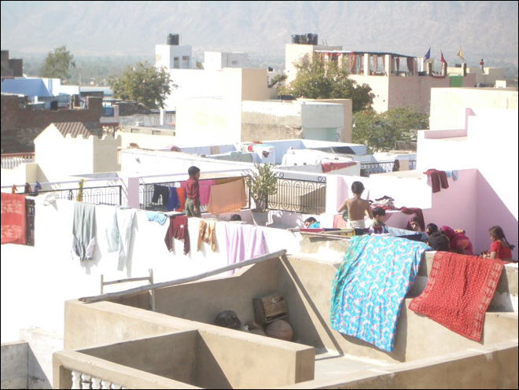
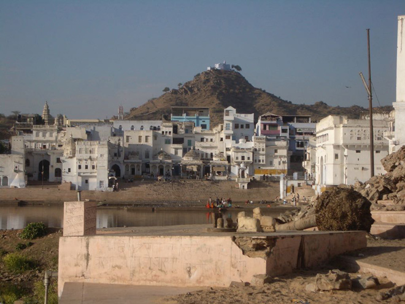
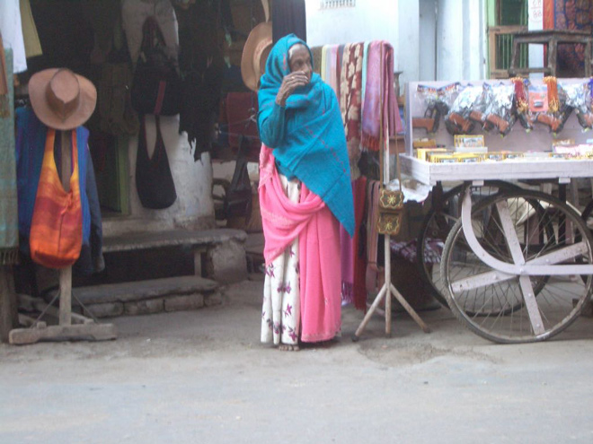
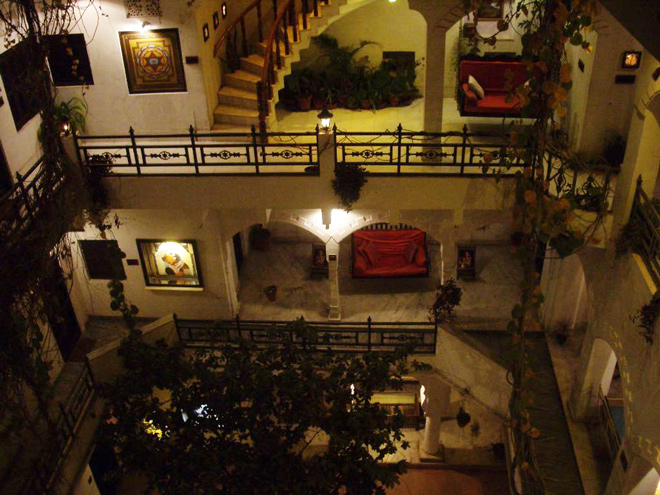
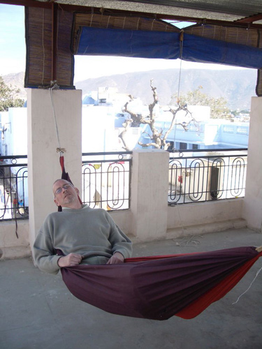
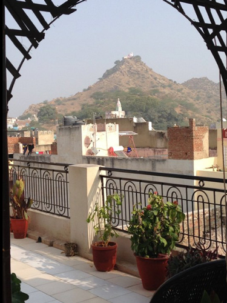
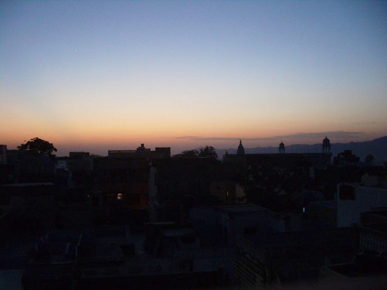
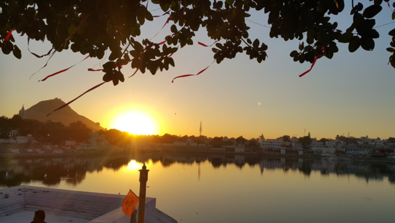
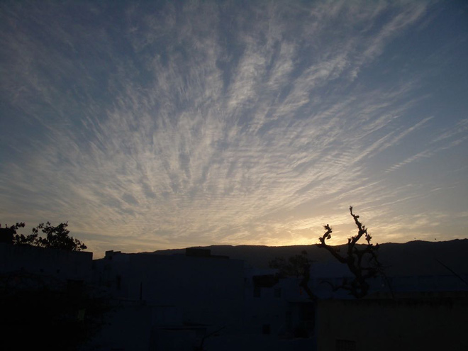